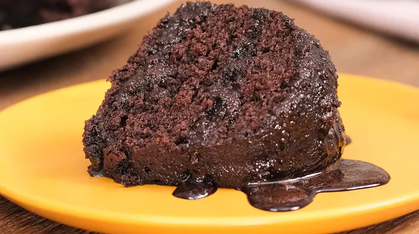

Home
Receitas
Login

Receitas de Bolo
Bolo de chocolate ingredientes
4 ovos
2 colheres (sopa) de manteiga
2 xícaras de (chá) de açúcar
1 xícara de (chá) de leite
4 colheres (sopa) chocolate em pó
3 xícaras de (chá) de farinha de trigo
2 colheres (sopa) e fermento
Modo de Preparo
Como preparar a massa;
Em um liquidificador adicione os ovos, o chocolate em pó, a manteiga, a farinha de trigo, o açúcar e o leite, depois bata por 5 minutos.
Adicione o fermento e misture com uma espátula delicadamente
Em uma forma untada, despeje a massa e asse em forno médio (180 ºC) preaquecido por cerca de 40 minutos. Não se esqueça de usar uma forma alta para essa receita: como leva duas colheres de fermento, ela cresce bastante! Outra solução pode ser colocar apenas uma colher de fermento e manter a sua receita em uma forma pequena.